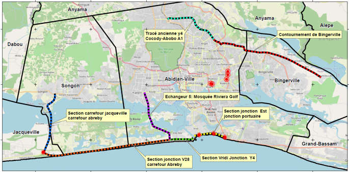

Ministère de l'Enseignement supérieur et de la Recherche
Faculté des sciences de Tunis
Département : Géologie
Mémoire
Présenté en vue de l’obtention du diplôme de Mastère professionnel en Sciences Géomatiques
Parcours : TOPOGRAPHIE ET PROJETS TERRITORIAUX
Élaboré par :
CHEMLI WICEM
Intitulé
Web Mapping informatif des voies structurantes du Grand Abidjan

Contexte du projet
Le Projet de Transport Urbain d'Abidjan (PTUA) – Phase 2 prévoit l'aménagement de près de 89 km de voies structurantes afin d'améliorer la mobilité dans le Grand Abidjan. Les travaux comprennent l'élargissement des axes routiers, la réalisation de 14 échangeurs et de plusieurs ouvrages d'art majeurs destinés à renforcer la fluidité du trafic, la connectivité entre les communes et le développement économique de l'agglomération.
Cette application permet de visualiser la hiérarchisation des sections étudiées ainsi que les principales caractéristiques des aménagements proposés.
M. CHAÂBENI ANIS : Encadrant académique
M. BEN HMIDA ANIS : Encadrant professionnel